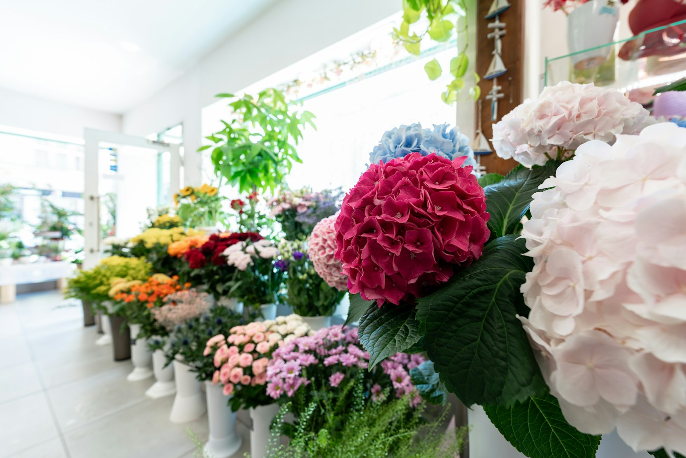

Market bunch
A joyful handful of seasonal stems
from €18A LITTLE COLOUR FOR THE EVERYDAY
Loose, lovely flowers for birthdays, thank-yous and Tuesdays that need a lift.
A FEW STEMS CAN CHANGE A WHOLE DAY
We follow the season and let the stems do their thing. Every bunch is gathered by hand, with a little surprise and plenty of personality.
02 / PICK YOUR MOMENT
Every bunch is a little different. That’s the good part.
A joyful handful of seasonal stems
from €18A generous, loose arrangement
from €42Small arrangements for gatherings
from €34Tell us the occasion; we’ll make it yours
Ask usExample flowers and prices for this fictional business.
COME IN AND SEE WHAT’S GROWING
Amsterdam · example location
Example location for this fictional business.
Tuesday–Friday · 10:00–18:00
Saturday · 09:00–17:00
Sunday–Monday · closed